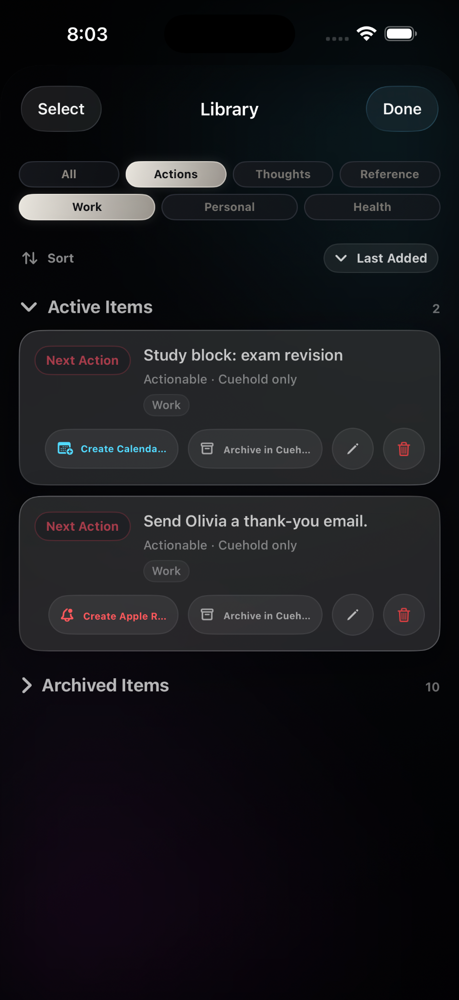
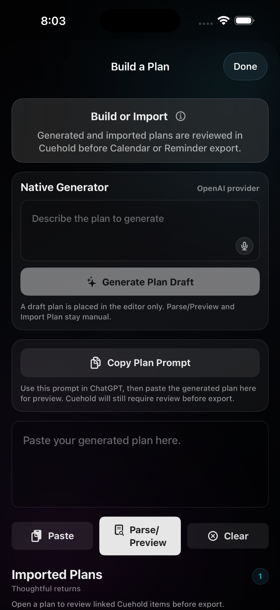

Capture
Save messy inputs fast.
Early TestFlight beta
Cuehold turns screenshots, voice notes, pasted text, thoughts, and shared links into clear next actions — then hands reminders to Apple Reminders and timing to Apple Calendar only when you confirm.
External TestFlight access is being prepared.
Product loop
Cuehold sits before your commitments. Capture the messy thing, sort it into clarity, then choose what happens next.
Save messy inputs fast.
Route into Action, Thought, or Reference.
Review before Apple Reminders or Calendar.
Core features
Capture
Save screenshots, links, text, voice notes, and loose thoughts before they disappear.

Sort
Turn captures into Actions, Thoughts, or Reference without building another heavy work system.

Plan
Paste or generate a plan draft, review it inside Cuehold, then choose what gets imported or exported.

Trust model
Cuehold does not silently create Reminders or Calendar events. You review before anything is handed off to Apple apps.
Optional AI-assisted sorting is consent-gated and explained before use.
Public beta
We are looking for Apple users who capture too much and want a clearer next step.
Join beta waitlistFAQ
No. Cuehold helps you decide what matters, then sends approved next actions to Apple Reminders only when you confirm.
No. Apple Calendar is the time map. Cuehold uses calendar context where needed and exports only after review.
No. Cuehold is a productivity workflow tool built for overloaded, fast-moving, capture-heavy brains. It is not diagnosis, treatment, or therapy.
Some cleanup and sorting features may optionally use AI-assisted processing if you enable them. Cuehold tells you before that happens.